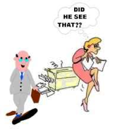
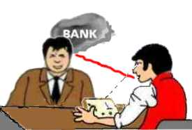
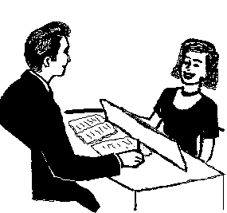

|
|
Basic Definitions for PCs |
|
|
Basic Definitions for PCs |
Note: This is often called C/S Instruction No 1 as it is the first educational step to do with a new client before actual auditing begins. C/S is the Case Supervisor - the person that guides and oversees the activity through written instructions for the auditor to do in session.
|
Basic Definitions (C/S No 1) |
PC Hat |
||
|
Affinity |
Comm
Cycle |
Preclear |
Alcohol Drugs Ethics Examiner - statements Food Off-line Actions Other Practices Talking about - own Case Sleep
|
|
Click illustrations to go to alphabetical glossary |
|||
The basic definitions we cover in this chapter are extremely important to understand and learn well. You may say they form the doorway to this new subject and activity.
It's like
the story in One Thousand and One Nights called 'Ali Baba and the Forty
Thieves'. In the tale, Ali Baba was a poor woodcutter, that gained access to a cave full of treasure.
He first observed the thieves use the magic phrase, Open, Sesame!
and a hidden door in the side of a mountain would slide open. Later, when the
thieves weren't around, Ali Baba tried it for himself. He stood in front
of the mountain and said, Open, Sesame! The hidden door would open
and Ali Baba could walk into the cave that was full of the thieves' precious
loot. The vocabulary you learn here will in a similar way open access to the
realm of self-improvement.
The basic vocabulary of any new field is very important to learn well. Learning
it
will teach you all the new ideas in the subject that you are new to. Unless you have them down
cold, you won't be able to get into the subject and study it with
success.
We covered some of the important terms in the previous chapter, but there are many more. What is covered in this chapter are the terms and ideas you have to grasp to successfully receive auditing; and you have to know them even better, when you are the auditor, of course. There may be a few repetitions, but we wanted to put it all into one chapter for reference. (There is also an extensive alphabetical word list in the back. If you click on any of the illustrations it should appear on your screen).
You will need a good English dictionary, so you can look up any words you do not understand. If English is not your first language, you also need a dictionary for your native language and English. You need the "Technical Dictionary of Scn", which contains these and many other terms. You may need other books for reference, such as R. Hubbard's "Fundamentals of Thought" and possibly "Scn 0-8 - Book of Basics".
|
A Demo Kit consists |
Finally you need a so-called Demo Kit (as described in the study manual). You use this to make small demonstrations on the table to your twin (or to your auditor, if done in session). It simply consists of small items you have put together in a little box - like paper clips, matches, screws and bolts, coins etc. You show, demonstrate or illustrate what a definition means, by 'show and tell' with the bit and pieces. You might say: "This match box is the pc; the coins and clips here are his Reactive Bank..." etc. You may also give examples from your own observations and experience to demonstrate your understanding. When, as an auditor, you have your client, the pc, demonstrate to you, be sure to have him or her also give plenty of observations from personal experience.
If done in session, you would simply ask:
"What is the definition of __________?" and refer to one term at the time.
You let the pc tell you. If he is unsure of the definition, you look it up and clear it to full understanding. In a session, if you use a Meter, you make sure each word is taken to a floating needle (FN), whether given correctly by the preclear at first or you have to look it up.
You have to make sure he understands all the words used in the definitions. If there is a word he doesn't understand or is unsure of its meaning, you have him look it up in a dictionary per study tech and clear it completely (to F/N if metered).
You have him demonstrate it with the demo kit and give you examples.
In session you would use the print-out, which is just the actual list of the words, etc. in this chapter. Here we describe it in context to make it readable.
|
R. Hubbard (1911-86). |
You clear these terms:
STANDARD CLEARING TECHNOLOGY (ST): A clearing technology, mainly defined and developed by R. Hubbard. An auditor applies it to a preclear in formal session. The goal is the spiritual betterment of the preclear. The application of the processes and technology will bring about this change and, consequently, a change in the pc's conditions and life. For short we use the letters ST to mean Standard Clearing Technology or standard technology in this manual.

The symbol used for Standard Clearing Tech is the seagull. This is based on the story about Jonathan Livingston Seagull by Richard Bach. This is a symbolic story about wanting to become a master in flying (ability and wisdom) and pass this ability onto new seagulls. By putting the Standard Clearing Technology on the web we pass this wisdom onto you and ask you to 'return the favor' by passing it onto somebody else.
SCIENTOLOGIE: (Scn): An applied religious philosophy. It deals with the study of knowledge, which through the application of its technology can bring about desirable changes in the conditions of life. (Taken from the Latin word scio, knowing in the fullest sense of the word, and the Greek word logos, to study.) A body of knowledge which, when properly used, gives freedom and truth to the individual. It was originally conceived by the German philosopher A. Nordenholz, who in 1934 published the book "Scientologie" in Munich, Germany. Its present form is based on R. Hubbard's work. Hubbard called it Scientology™ (different spelling). He saw it as his purpose to gather wisdom and truth from many sources, refine it and make it into one body of knowledge. As this is a common effort pursued by many philosophers throughout the ages, we keep the spelling of A. Nordenholz: 'Scientologie'. We use however 'Scn' throughout the manual.
You could say Standard Clearing Technology or Standard Technology is the auditing technology part of Scn. Scn is a broader subject. It includes philosophy covering the character of life, death, Man, the spirit, the mind, and the physical universe; but also subjects like Ethics, Administration and Management, Logic, and Data Analysis.
AUDITING: Also called processing. This is the application of ST processes and procedures to someone by a trained auditor. The exact definition of auditing is: the action of asking a preclear a question (which he can understand and answer), getting an answer to that question and acknowledging him for that answer.
CLEAR: 1) A person (thetan) who can be at cause knowingly and at will over mental matter, energy, space and time as regards the first dynamic (survival for self). The state of Clear is above the release Grades 0-4 of ST (all of which have to be done before you get to clearing). 2) A Being who no longer has his own Reactive Mind (this is the valid technical definition).
AUDITING SESSION: A period in which an auditor and preclear are in a quiet place where they will not be disturbed. The auditor gives the preclear certain and exact commands which the preclear can follow. The auditor starts the session and is the one who ends the session.
PRECLEAR: (PC): From pre-Clear, a person not yet Clear; generally a person being audited, who is thus on his way to Clear; a person who, through ST processing, is finding out more about himself and life.
AUDITOR: A person trained and qualified in applying ST processes and procedures to individuals for their betterment; called an auditor because auditor means "one who listens."
 |
The Thetan is |
THETAN: From THETA (life static), a word taken from the Greek symbol or letter 'theta', traditional symbol for thought or spirit. The thetan is the individual himself - not the body or the mind. The thetan is the "I"; one doesn't have or own a thetan; one is a thetan. It's his "real Me".
MIND: A control system between the thetan and the physical universe (including his physical body). It is not the brain. The mind is the accumulated recordings of thoughts, conclusions, decisions, observations and perceptions of a thetan throughout his entire existence. The thetan can and does use the mind in handling life and the physical universe.
BODY: The organism with limbs, head, etc. It's the physical part of a human being or animal - whether the body is living or dead.
PICTURE: An exact likeness; image. A mental image.
REACTIVE MIND: Reactive Bank. The portion of the mind which works on a stimulus-response basis (given a certain stimulus it will automatically give a certain response) that is not under a person's volitional control and which exerts force and power over a person's awareness, purposes, thoughts, body and actions. The Reactive Mind never stops operating. Pictures of the environment, of a very low order, are taken (recorded) by this mind even in some states of unconsciousness.
 |
A Mental Image Picture of a |
MENTAL IMAGE PICTURE: Mental pictures, facsimiles: a copy of one's perceptions of the physical universe of some time or incident in the past. It can also be mock-ups, meaning produced by the thetan with his imagination and not a copy of an actual incident.
BANK: An every-day name for the Reactive Mind. The mental image picture collection of the pc.
COMMUNICATION CYCLE: A completed communication, including origination of the communication, receipt of the communication, and answer or acknowledgement of the communication. A communication cycle consists of simply: cause, distance, effect, with intention, attention, duplication and understanding.
AUDITING COMM CYCLE: This is the auditing communication cycle that is always in use:
1. Is the pc ready to receive the command? (appearance, presence)
2. Auditor gives command/question to pc (cause, distance, effect)
3. Pc looks in his Bank for an answer
4. Pc receives answer from his Bank
5. Pc gives answer to auditor (cause, distance, effect)
6. Auditor acknowledges pc
7. Auditor sees that pc received the acknowledgement (attention)
8. New cycle beginning with (1).You drill different parts of this thoroughly in the Training Routines (TRs).
|
The Time Track is |
TIME TRACK: The consecutive record of mental image pictures that accumulates through the preclear's existence. The Time Track is a very accurate record of the pc's past, very accurately timed and very obedient to the auditor. If a motion picture film were 3D, had 55 perceptions and could fully react upon the observer, the Time Track could be called a motion picture film.
MENTAL MASS: Mental matter, energy, space and time. It exists in the mind and has physical existence that can be measured by a ST Meter. The proportionate weight of a picture of say, an elephant would be terribly slight compared to the real object, the elephant which the person is making the picture of.
Have somebody demonstrate ST Meter here, if possible. The Meter registers mental mass; changes of the position of the needle indicates changes of the mass in pc's mind.
|
Key-In: Meeting a |
KEY-IN: Is a moment where an earlier upset or earlier incident has been restimulated and affects the pc in a negative way.
KEY-OUT: The action of a reactive incident (or many related incidents) dropping away without the mental image pictures being erased. The picture is still there but now far away. The pc feels released or separate from his Reactive Mind or some portion of it.
RELEASE: A preclear whose Reactive Mind or some major portion of it is keyed-out and is not influencing him. A series of gradual key-outs. At any given one of those key-outs, the individual will detach from the remainder of his Reactive Bank. In ST processing there are many major Grades of Release.
POSTULATE: A conclusion, decision, or resolution made by the individual himself; to conclude, decide, or resolve a problem or to make a plan or set a pattern for the future, or to nullify a pattern of the past (as in in New Years resolutions). We mean, by postulate, a self-created truth. A postulate is, of course, that thing which the individual uses to start a directed desire or order, or inhibition, or enforcement; it is in the form of an idea. Postulate means to cause a thinkingness or consideration.
 |
A cognition is a bright |
COGNITION: A pc origination or statement indicating he has "come to realize." It's a "What do you know? I..." statement. A new realization of life. It results in a higher degree of awareness and consequently a greater ability to succeed with one's activities in life.
 |
The Needle on the |
FLOATING NEEDLE (FN or F/N): A floating needle is a certain needle behavior on a ST Meter. It is a rhythmic sweep of the needle over the dial at a slow, even pace. A valid floating needle is always accompanied by very good indicators in the pc.
Rudiments
The next section has to do with the rudiments. They are questions and small processes usually used in the beginning of a session. Their purpose is to handle any mental distractions the pc may have when he first arrives in session. By getting these handled and out of the way, the pc will have more willingness and ability to do the major processes to the full intended result. The rudiments can also be used during the session, if the auditor sees any of the signs of 'out-rudiments'.
RUDIMENTS: First principles, steps, stages or conditions. The basic actions done at the beginning of a session to set up the pc for the major session action. The normal rudiments are ARC breaks (upsets), Present Time Problems (worries) and Withholds (something pc feels he shouldn't say) - as explained in full below.
 |
Affinity: Degree of |
AFFINITY: Degree of liking or affection or lack of it. Affinity is a tolerance of distance. A great affinity makes you feel 'close' to somebody or something. It's a tolerance of or liking of closeness or close proximity. A lack of affinity would be an intolerance of or dislike of closeness. Affinity is one of the components of understanding; the other components are reality and communication.
One's level of affinity is expressed on the so-called tone scale. This is an emotional scale. Some of the major steps are: Apathy, fear, anger, antagonism, boredom, conservatism, interest, and enthusiasm. Apathy is the lowest affinity here, enthusiasm the highest.
 |
Reality has to do |
REALITY: Has to do with agreement (or lack thereof). It is the agreed-upon apparency of existence. A reality is any data that agrees with the person's perceptions, way of thinking and education. Reality is one of the components of understanding. Reality is what is.
(Synonyms from daily language would include 'the order of things' and 'World Order'. "That is how we do things around here", would usually express a strong agreement).
 |
Communication: |
COMMUNICATION: The exchange or interchange of ideas or objects between two people or designated locations (terminals). More precisely the definition of communication is the consideration and action of impelling an impulse or particle from source point across a distance to receipt point, with the intention of bringing into being at the receipt point a duplication and understanding of that which emanated from the source point. The formula of communication is: cause, distance, effect, with intention, attention and duplication and understanding. Communication by definition does not need to be two-way. Communication is one of the component parts of understanding.
 |
ARC break: |
ARC BREAK: A sudden drop or cutting of one's affinity, reality or communication with someone or something. It is pronounced by its letters: A-R-C break. This is in common language known as an upset or a condition of being shocked, disappointed, surprised etc. The A-R-C break gives an inside look in the anatomy of what is going on.
PROBLEM: Anything which has opposing sides of equal force; especially postulate-counter-postulate, intention-counter-intention or idea-counter-idea; an intention-counter-intention that worries the preclear.
PRESENT TIME PROBLEM: A specific problem that exists in the physical universe now, on which a person has his attention fixed. This can include practical matters he feels he ought to do something about right away. Any set of circumstances that occupies the pc's attention, so he feels he should do something about it instead of being audited. Abbreviation: PTP.
 |
Overt: A |
OVERT: A harmful act. A bad deed. An overt act is an act of omission or commission which does the least good for the least number of dynamics or the most harm to the greatest number of dynamics. An aggressive or destructive act by the individual against one or more of the eight dynamics (as explained in Fundamentals of Thought, the eight dynamics are: (1) self, (2) family and sex, (3) group(s), (4) mankind, (5) animals and plants, (6) physical universe and objects, (7) life and spiritual things and, (8) infinity, religion and God). An overt act is that thing which you have done to others, but you aren't willing to have happen to yourself.
 |
Withhold: She ruined |
WITHHOLD: An undisclosed harmful (contra-survival) act. After having committed an overt, the person wants to keep it hidden or secret. So he/she withholds the overt.
 |
A Missed Withhold |
MISSED WITHHOLD: A withhold, which has been restimulated by another but not disclosed. This is a withhold which another person nearly found out about, leaving one with the withhold in a state of wondering whether her hidden deed is known or not. The missed withhold is different from the withhold as the pc's main worry is: Did the other person found out or not? The action of the other to nearly find out or to raise the question about maybe he found out or guessed it is why it's called a missed withhold.
EARLIER SIMILAR: When the auditor is checking the rudiments, he may run into the situation that the difficulty doesn't resolve right away. To resolve the situation he will have the pc look for an earlier similar incident.
Earlier, means it happened before or further back in time, than the incident they were just talking about.
Similar, means it was somewhat the same type of incident. Maybe having to do with the same person or persons, the same place or the same surrounding circumstances, or perhaps of similar content.
|
The power of an incident |
To ask for an earlier similar incident is used in many processes. The auditor, in running many processes, will ask for Earlier Similar Incident. A reason the present incident does not resolve is because it unknowingly reminds the pc about earlier times. When he is sent earlier and the exact circumstances becomes known to him, the subject matter will clear up.
 |
Repetitive Process: |
Processes
REPETITIVE PROCESS: A process, in which the same auditing question or command is given many times to the pc. The pc is finding new answers every time. The auditor will state the command as it has never been asked before in a new unit of time, but with no variation of words; he will acknowledge the pc's answer and handle the pc origins by understanding and acknowledging what the pc said. This type of process will permit the individual to examine his mind and environment thoroughly and sort out relative importances.
Many processes are run on different flows. This basically has to do with who is doing it to whom.
FLOW: A stream of energy between two points. An impulse or direction of energy particles or thought or objects between terminals.
In processing the auditor works with four main flows:
FLOW 1: something happening to self. Another doing something to you.
FLOW 2: doing something to another. You doing something to another.
FLOW 3: others doing things to others. You see it happen as a spectator.
FLOW 0: self doing something to self. You do something to yourself.
Assessment and Prepared Lists
The auditor, trained in using a Meter, can use prepared (printed) lists to find the specific problem or difficulty he needs to address to get the preclear out of an unpleasant or puzzling situation that has suddenly arisen in session. The list will contain all the possible difficulties for that kind of situation and the Meter will tell the auditor which one is the first one to take up. A prepared list may turn up one thing or many things that should be tackled before the routine process should be taken up again. When done the auditor and preclear can resume work on the process they were doing before the situation arose that took them off that process. Prepared lists can also be used to address a troubling area of pc's life and 'clean it up'.
You can do many processes without a Meter, but one of the advantages an auditor trained in using the Meter has is that he can use prepared lists to quickly locate the exact area he should address.
ASSESS: means to choose from a list of statements - which item or thing has the biggest read on the Meter and the pc's interest. The biggest read usually will also have the pc's interest.
 |
Assessment is done between the |
ASSESSMENT: is the action done from a prepared list. Assessment is done by the auditor between the pc's Bank and the Meter. The auditor reads each line from the list and notes which line or item has the biggest reaction. The auditor looks at the Meter while doing an Assessment. Assessment is the whole action of obtaining a significant item from a pc.
 |
Auditors Code applies |
Auditors Code
Below is the Auditors Code. We mentioned in the previous chapter that it consists of an important set of rules, which guides the auditor's professional behavior and attitude. The purpose of these rules is to develop maximum trust between auditor and pc. Maximum trust leads to quickest and most lasting results. It's a joy to be audited by an auditor, who sticks to this code rigorously all the time. Remember the important rule: Auditor plus pc is greater than pc's Bank (auditor+pc>Bank). The comments below are added and are not part of the code.
THE AUDITOR'S CODE for ST Auditors.
(1) Never evaluate for the preclear or tell him what he should think about his case in session.
Comment: The auditor never tells the preclear what to think about his problems; he never tries to solve the pc's problems for him. He lets the pc figure it out and helps him to do that with the technology and the processes. To break this rule in auditing is bad. It's called evaluation. Also he does not tell pc what written materials mean, but helps pc understand them by clearing up the words and having him do demonstrations and give examples.
(2) Never invalidate the preclear's case or gains in or out of session.
Comment: The auditor never tells the pc what he think is wrong with him - or worse, tells him he is wrong about something. Again the whole purpose of auditing is to help the pc become capable of figuring these things out for himself. To make wrong or contradict the pc is called invalidation. It's bad to do as an auditor; it's very counter-productive. It breaks down the pc's self-confidence and trust in the auditor.
(3) Use only the standard application of ST to a preclear in the standard way.
(4) Always keep all auditing appointments once made.
Comment: Helps building confidence and trust in the auditor/pc
relationship.
(5) Do not process a preclear who has not had sufficient rest and who is
physically tired.
(6) Do not process a preclear who is improperly fed or hungry.
Comment: A tired or hungry pc is not up to his best, when it
comes to confronting his Bank. Extreme tiredness and hunger can lead to nervous breakdowns all by themselves. It's important to take care of these factors
beforehand, so the session will mean a big step forward. The auditor checks
that the pc is well fed and rested before each session.
(7) Do not permit a frequent change of auditors.
Comment: Helps in building confidence and trust in the auditor/pc
relationship.
(8) Do not sympathize with a preclear, but be effective.
Comment: Compassion and sympathy are two different things. To
sympathize is to feel sorry for the pc and apparently agree with the pc's
difficulties. It is very low on the emotional tone scale. To be effective the
auditor has to stay high on the tone scale and encourage his pc to get
through his difficulties. The auditor has to stay positive and have
understanding but be insistent and in control to be effective.
(9) Never let the preclear end session on his own determinism, but finish off
those cycles you have begun.
Comment: The pc can occasionally become scared and want to run
away from his Bank. The auditor is there to make sure pc gets through temporary
difficulties and reaches the EP of the process. There is a basic rule of
auditing: "The way out is the way through". Only if the auditor runs
into a situation he feels he needs the case supervisor's help to resolve would
he end off before completely done. He would get the needed instructions and take
the pc into session again to complete the action to the End Phenomena.
(10) Never walk off from a preclear in session.
Comment: Helps in building confidence and trust in the auditor/pc
relationship.
(11) Never get angry with a preclear in session.
Comment: This would be a form of invalidation. Remember
auditor+pc>pc's Bank. The pc must feel safe enough to close his eyes when he
wants to and look
into his Bank. An angry auditor would make this impossible.
(12) Always run a major case action to its end phenomenon.
Comment: This is related to (9), but there is more to it. The
auditor has to ensure that the pc gets the full benefits available from a
process or set of processes by not ending off too soon.
(13) Do not run any one action beyond its end phenomenon.
Comment: A process can be overrun, meaning beyond a point
where it has culminated (EP'ed). A set of processes may also be overrun. The auditor has to stay alert and know the
exact point when the EP is reached.
(14) Always grant beingness to the preclear in session.
Comment: In (8) we had 'don't sympathize'. 'Grant Beingness'
is a lot different. The ability to grant (give, allow) beingness to
others is probably the highest of human virtues. It is even more important to be
able to permit (allow) other people to have beingness than to be able oneself to
assume it. It is very productive as regards results in auditing.
(15) Do not to mix the processes of ST with other practices except when the
preclear is physically ill and only medical means will serve.
Comment: If you as a pc are currently involved with other practices,
you should tell your auditor. If you think you need medical assistance, tell
your auditor as well.
(16) Always maintain good Communication with the preclear and do not cut his
communication or let him overrun in session.
Comment: A mechanical or frozen approach won't do the
trick. Only live communication will actually be able to make the processes work.
The live theta energy of communication is senior to the Bank and can make it vanish,
piece by piece (As-Isness). It is the pc that can As-is his own Bank; but the
auditor, by maintaining good communication with the pc makes sure the pc capable of doing
it.
(17) Never enter comments, expressions or enturbulence into a session that
distract a preclear from his case.
Comment: Give the pc piece and quiet. Take care of 'behind the
scenes' business without involving the pc.
(18) Always continue to give the preclear the process or auditing command when
needed in the session.
Comment: In (9) we had "The way out is the way
through". There is another rule "What turns it on will turn it
off". It can occasionally look like you are getting nowhere or things are
getting worse. But when you keep going, and do it with skill and ARC, it will soon be clear, that there is
another side of the process and a real EP.
(19) Do not let a preclear run a wrongly understood command.
Comment: Part of every process is clearing the commands or
questions. This is done with dictionaries, etc.
(20) Do not try to explain, justify, or make excuses in session for any auditor
mistakes whether real or imagined.
Comment: Related to (17). Also, if you start to do the above,
you break down the pc's confidence in you and it may start arguments.
(21) Always estimate the current case state of a preclear only by Standard
Case Supervision data and do not diverge because of some imagined difference in
the case.
Comment: There is a known remedy for any pc situation. A case
supervisor will between sessions look over the reports to ensure that everything
is done right and ensure the best course is taken. This is Standard Case
Supervision.
(22) Never use the secrets of a preclear divulged in session for
punishment or personal gain.
Comment: There is a client/practitioner privilege. The auditor
is sworn to secrecy and confidentiality in a similar manner to lawyers, doctors
and priests.
(23) Do not advocate ST only to cure illness or only to treat the insane, as it
is intended for spiritual gain.
Comment: Processing has been known to have a positive effect on people's health and even psychiatric conditions. The auditor can not and should not make any promises. He is pursuing spiritual goals and the spirit or thetan can suddenly and unpredictably change things around that make medical conditions disappear.
There is a more detailed commentary to the code
in the chapter, 'Auditors Code' of ST0.
EXAMINER: In a bigger organization there is what is called the Examiner. The Examiner is there to give the pc an independent inspection after session. She will seat the pc and have him hold the Meter cans for a moment. She won't say anything, but simply note down pc's appearance and Meter response. Pc can (and should) give a short statement about the session to her. The Examiner is also the person a preclear sees if he wishes to make any sort of statement regarding his case, or if there is something he wants handled regarding his case.
The following information has direct relevance to what the pc is supposed to do and not do outside of session. (For more info for beginning pc's about what auditing is see also, "What is Auditing" and "Basic Definitions for PC's").
FOOD: The Auditors Code requires that the pc be well fed. There is a little more to that. The Meter responds better when pc's metabolism is good. Therefore he should eat extra healthy food, including fresh vegetables and take multi vitamins/minerals while in auditing. This speeds up auditing. It is recommended to take a daily mega-dose of balanced vitamins/minerals. Basic information about this can be found in R. Hubbard's book, "Clear Body, Clear Mind". (A basic table is included in Glossary).
SLEEP: The pc has to be well rested. Eight hours is recommended. Also, auditing should not be done late at night or outside the pc's normal awake hours.
ALCOHOL, DRUGS: Alcohol, drugs, and auditing do not mix. The rule is: Drink no alcohol 24 hours before session. Do not take pain-killers, headache pills and the like while in auditing. The rule is usually no auditing a week after such medication. Street drugs can take 4-6 weeks to wear off. You should tell your auditor what medications you are on or take on a regular basis and clear up any questions up with him.
OTHER TREATMENT OR PRACTICES: The Auditors Code (above) states:
"(15) Do not mix the processes of ST with other practices except when the preclear is physically ill and only medical means will serve."
If the pc is currently involved with other practices he should tell the auditor right away. For ST to be effective it has to be allowed to work. If the pc depends on several types of therapy simultaneously there is probably a physical condition or a major problem in his life. The auditor will make sure he gets any medical assistance needed and then handle the case aspects of the condition with the pc fully being there. ST is effective when allowed to work.
|
We are not trying to replace |
OFF-LINE ACTIONS: Related to the above is: Do not accept off-line actions. The pc should not accept assists, do a full TRs Course, or accept "Coffee Shop Auditing" (meaning somebody informally trying to audit you over a cup of coffee) while receiving auditing. Only when the auditor and the case supervisor know what is going on can they be fully effective.
PCs SHOULD NOT TALK ABOUT THEIR CASES: This can lead to invalidations and out reality and undue restimulation by "helpful listeners".
EXAMINER STATEMENTS: If something out of the ordinary happens outside session that the pc feels it is important for the auditor to know, he can go to the Examiner and tell it to her. She will ensure it gets in the folder and that the auditor (and case supervisor) will know. It can be illness, accidents, unhandled or new problems; also unexpected wins and successes. In case the pc feels bad about earlier auditing or a sudden situation in life, it becomes high priority for the auditor to handle it and he should do so within 24 hours. (See also "Examiner", just above).
ETHICS: If pc runs into heavy problems with relatives, employers (or the law), etc., the auditor may need to address it before auditing is begun or continued. This is based upon the auditor's judgment, but also on some technical facts. Heavy Present time problems need to be addressed in the physical universe. (See also: Who Can the Auditor help?).
This concludes all the basic data needed to be able to receive
auditing
successfully. Make sure you know this very well as it saves you time in auditing
and makes it run better.